File: 000870.gt.txt (if the image is defective, simply delete all Arabic text and the line will be excluded)
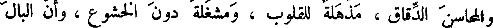
والمحاسن الدقاق ، مذهلة للقلوب ، ومشغلة دون الخشوع ، وأن البال
File: 000871.gt.txt (if the image is defective, simply delete all Arabic text and the line will be excluded)
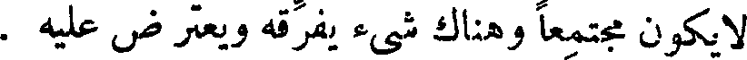
لا يكون مجتمعا وهناك شيء يفرقه ويعترض عليه .
File: 000872.gt.txt (if the image is defective, simply delete all Arabic text and the line will be excluded)
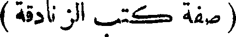
( صفة كتب الزنادقة )
File: 000873.gt.txt (if the image is defective, simply delete all Arabic text and the line will be excluded)
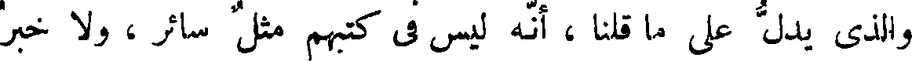
والذى يدل على ما قلنا ، أنه ليس فى كتبهم مثل سائر ، ولا خبر
File: 000874.gt.txt (if the image is defective, simply delete all Arabic text and the line will be excluded)
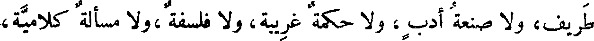
طريف، ولا صنعة أدب ، ولا حكمة غريبة، ولا فلسفة ،ولا مسألة كلامية،
File: 000875.gt.txt (if the image is defective, simply delete all Arabic text and the line will be excluded)

ولا تعريف صناعة ، ولا استخراج آلة ، ولا تعليم فلاحة ، ولا تدبير
File: 000876.gt.txt (if the image is defective, simply delete all Arabic text and the line will be excluded)
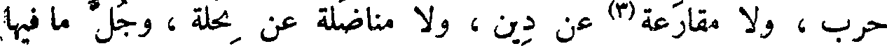
File: 000877.gt.txt (if the image is defective, simply delete all Arabic text and the line will be excluded)
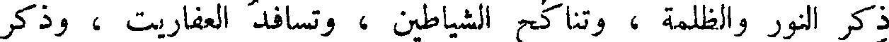
ذكر النور والظلمة ، وتناكح الشياطين ، وتسافد العفاريت ، وذكر
File: 000878.gt.txt (if the image is defective, simply delete all Arabic text and the line will be excluded)
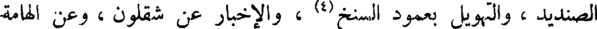
الصنديد ، والتهويل بعمود السنخ(4) ، والإخبار عن شقلون ، وعن الهامة
File: 000879.gt.txt (if the image is defective, simply delete all Arabic text and the line will be excluded)
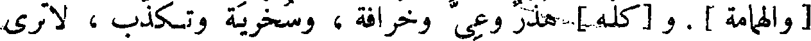
[ والهمامة ] . و [كله ] هذر وعى وخرافة ، وسخرية وتكذب ، لا ترى
File: 000880.gt.txt (if the image is defective, simply delete all Arabic text and the line will be excluded)
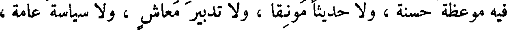
فيه موعظة حسنة ، ولا حديثا مونقا ، ولاتدبير معاش ، ولاسياسة عامة ،
File: 000881.gt.txt (if the image is defective, simply delete all Arabic text and the line will be excluded)
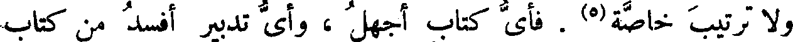
ولاترتيب خاصة(5) . فأى كتاب أجهل ، وأى تدبير أفسد من كتاب
File: 000882.gt.txt (if the image is defective, simply delete all Arabic text and the line will be excluded)
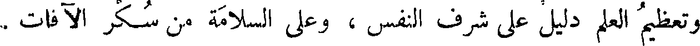
وتعظيم العلم دليل على شرف النفس ، وعلى السلامة من سكر الآفات .
File: 000883.gt.txt (if the image is defective, simply delete all Arabic text and the line will be excluded)
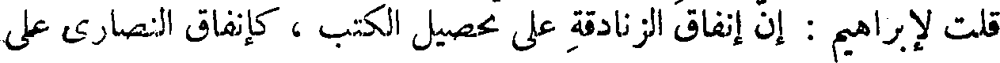
قلت لإبراهيم : إن إنفاق الزنادقة على تحصيل الكتب ، كإنفاق النصارى على
File: 000884.gt.txt (if the image is defective, simply delete all Arabic text and the line will be excluded)

البيع ، ولو كانت كتب الزنادقة كتب حكم وكتب فلسفة ، وكتب مقاييس
File: 000885.gt.txt (if the image is defective, simply delete all Arabic text and the line will be excluded)
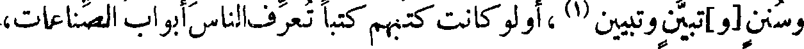
وسنن [و]تبين وتبيين(1) ، أو لو كانت كتبهم كتبا تعرف الناس أبواب الصناعات،
File: 000886.gt.txt (if the image is defective, simply delete all Arabic text and the line will be excluded)
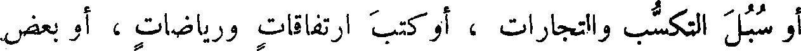
أو سبل التكسب والتجارات ، أو كتب ارتفاقات ورياضات ، أو بعض
File: 000887.gt.txt (if the image is defective, simply delete all Arabic text and the line will be excluded)
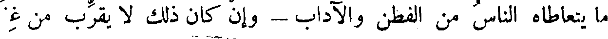
File: 000888.gt.txt (if the image is defective, simply delete all Arabic text and the line will be excluded)
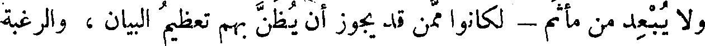
ولا يبعد من مأثم - لكانوا ممن قد يجوز أن يظن بهم تعظيم البيان ، والرغبة
File: 000889.gt.txt (if the image is defective, simply delete all Arabic text and the line will be excluded)

29 في التبين (2) ، ولكنهم ذهبوا فيها مذهب الديانة ، [ و ] وعلى طريق تعظيم
File: 000890.gt.txt (if the image is defective, simply delete all Arabic text and the line will be excluded)
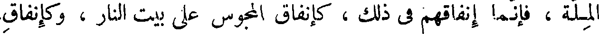
File: 000891.gt.txt (if the image is defective, simply delete all Arabic text and the line will be excluded)
النصارى على صلبان الذهب ، أو كإنفاق الهند على سدنة البددة. ولو كانوا
File: 000892.gt.txt (if the image is defective, simply delete all Arabic text and the line will be excluded)
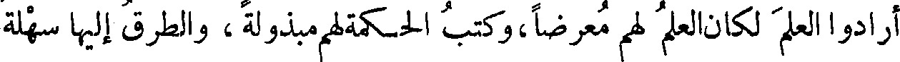
أرادوا العلم لكان العلم لهم معرضا،وكتب الحكمة لهم مبذولة، والطرق إليها سهلة
File: 000893.gt.txt (if the image is defective, simply delete all Arabic text and the line will be excluded)

معروفة . فما بالهم لا يصنعون ذلك إلا بكتب دياناتهم ، كما يزخرف النصارى
File: 000894.gt.txt (if the image is defective, simply delete all Arabic text and the line will be excluded)
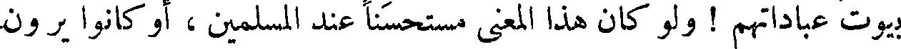
بيوت عباداتهم ! ولو كان هذا المعنى مستحسنا عند المسلمين ، أو كانوا يرون
File: 000895.gt.txt (if the image is defective, simply delete all Arabic text and the line will be excluded)
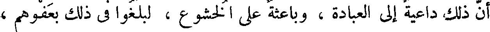
أن ذلك داعية إلى العبادة ، وباعثة على الخشوع ، لبلغوا فى ذلك بعفوهم ،
File: 000896.gt.txt (if the image is defective, simply delete all Arabic text and the line will be excluded)
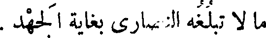
ما لا تبلغه النصارى بغاية الجهد .
File: 000897.gt.txt (if the image is defective, simply delete all Arabic text and the line will be excluded)

( مسجد دمشق )
File: 000898.gt.txt (if the image is defective, simply delete all Arabic text and the line will be excluded)
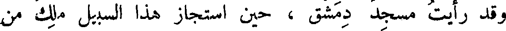
وقد رأيت مسجد دمشق ، حين استجاز هذا السبيل ملك من
File: 000899.gt.txt (if the image is defective, simply delete all Arabic text and the line will be excluded)
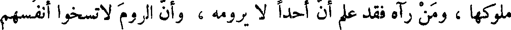
ملوكها، ومن رآه فقد علم أن أحدا لا يرومه ، وأن الروم لا تسخوا أنفسهم
To Save: `Ctrl+s`, make sure to choose `Webpage, complete`!